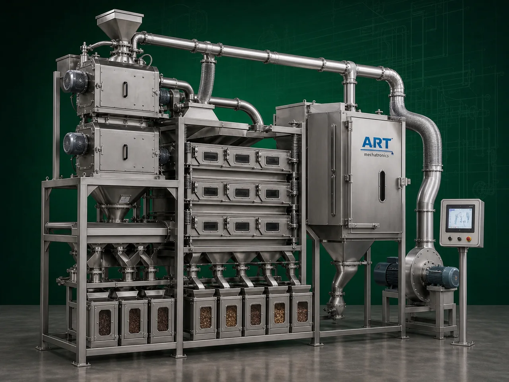

Winnower Machine (Industrial Air Separation & Lightweight Impurity Removal System)
A Winnower Machine, also known as a Winnowing Machine or Industrial Air Separation Machine, is an advanced industrial equipment designed for separating lightweight impurities such as husk, shell, chaff, skin, dust, and unwanted particles from grains, seeds, nuts, cocoa beans, pulses, spices, and food products using controlled airflow and density-based separation technology.

About the Winnower Machine
The machine improves:
- Product purity
- Product quality
- Food hygiene
- Processing efficiency
- Final product appearance
Winnower machines are widely used in industries such as:
Grain processing plants
Seed processing industries
Cocoa processing plants
Nut processing industries
Spice industries
Pulses industries
Food processing plants
Agro product industries
where efficient lightweight impurity removal and density-based cleaning are essential.
The machine operates using:
- Controlled airflow
- Air aspiration systems
- Vibratory feeding
- Density-based air separation
to separate lighter waste materials from heavier usable products.
Winnower machines are highly suitable for:
- Husk separation
- Shell removal
- Cocoa nib separation
- Seed cleaning
- Grain cleaning
- Nut skin separation
- Dust removal applications
ART Mechatronics offers high-performance winnower machines, engineered for high separation efficiency, energy-efficient operation, hygienic processing, and reliable industrial performance.
Working Principle of Winnower Machine
Grains, seeds, nuts, cocoa beans, or food products are fed into machine through feeder system
Blower or aspiration system generates controlled airflow inside separation chamber
Creates density-based separation zone
Machine separates:
- Husk
- Shell
- Chaff
- Dust
- Thin skin
- Lightweight waste particles from heavier product materials.
Heavier product falls separately Lighter impurities carried away by airflow
Dust and lightweight waste collected through: Cyclone separator Dust collector Air filtration systems
Cleaned and separated product discharged for further processing or packaging
Types of Winnower Machines
- 1. Grain Winnower Machine
Specially designed for:
- Wheat
- Rice
- Maize
- Grain cleaning applications
- 2. Seed Winnower Machine
Used for: ✔ Seed cleaning and impurity separation
- 3. Cocoa Winnower Machine
Suitable for:
- Cocoa bean shell separation
- Cocoa nib processing
- 4. Nut Winnower Machine
Designed for:
- Peanut skin separation
- Dry fruit shell removal
- 5. Air Aspirator Winnower
Combines: ✔ Air aspiration and separation technology for improved cleaning efficiency.
- 6. Industrial Continuous Winnower Machine
Suitable for: ✔ Large-scale food and agro processing plants
Industries Using Winnower Machine
🌾 Grain Processing Industry Husk and dust removal from grains 🌱 Seed Processing Industry Seed cleaning and lightweight impurity separation 🍫 Cocoa Processing Industry Cocoa shell and nib separation 🥜 Nut Processing Industry Peanut and dry fruit skin separation 🌶️ Spice Industry Spice husk and dust removal 🍃 Food Processing Industry Product cleaning and purification 🍃 Pulses Industry Pulse cleaning and shell separation
Features & Advantages
- Efficient husk and shell separation
- Improves product purity and quality
- Continuous industrial operation
- Energy-efficient airflow separation system
- Hygienic and food-grade processing
- Heavy-duty industrial construction
- Low maintenance requirement
- Reduces manual cleaning effort
- Suitable for multiple agro and food products
Technical Highlights
Separation Technology: Air aspiration Density-based airflow separation Vibratory feeding Construction: Stainless Steel / Mild Steel Integrated Systems: Blower Cyclone separator Dust collector Capacity: Small to large industrial throughput Operation: Batch type Continuous type Automation: Semi-automatic Fully automatic PLC-based systems
Turnkey Winnowing Solutions
ART Mechatronics offers: Complete winnowing and air separation systems Cyclone and dust collection integration Cleaning and grading line integration Pneumatic conveying systems Installation & commissioning After-sales service & AMC
Why Choose Art Mechatronics
Expertise in industrial cleaning and air separation systems Customized solutions for multiple agro and food products High-performance and durable machine construction Energy-efficient and reliable industrial designs Proven industrial performance across sectors
Applications
Grain Processing Plants Seed Processing Units Cocoa Processing Industries Nut Processing Facilities Food Processing Plants Spice Manufacturing Units
Related Cleaning, Sorting & Grading machines
Get pricing & specs for the Winnower Machine
Share the product, target capacity, current process and plant location. These details help our engineers discuss the right machine or line configuration.
One partner, from design to start-up
ART Mechatronics designs, manufactures, installs and commissions your Winnower Machine solution with regional presence in India, UAE and Thailand.